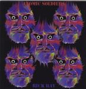

Home Artist links Label link

| Artist: | Rick Ray |
| Title: | Atomic Soldiers |
| Label: | Neurosis Records |
| Length(s): | 66 minutes |
| Year(s) of release: | 1999 |
| Month of review: | 06/2000 |
Line up
Rick Ray - guitars, keyboards, vocals, bass, rx8, percussion
Rick Schultz - reeds
Tracks
| 1) | The Daulhowz Concerto | 11.33
|
| | a) Dolly The Parton |
|
| | b) Salvadore The Dolly |
|
| | c) Dolly The Lama |
|
| | d) Dolly The Clone |
|
| | e) Barbie The Dolly |
|
| 2) | Bloppy Stuff (part IV) | 4.02
|
| 3) | Dancing On The Killing Floor | 11.25
|
| 4) | Put Your Ears On | 3.10
|
| 5) | The Organ Harvester | 5.27
|
| 6) | Atomic Soldiers | 6.12
|
| 7) | The Joke's On Me | 8.09
|
| 8) | The Plan | 5.23
|
| 9) | Victims Of The Times | 7.05
|
| | | 3.22
|
Summary
A do-it-mostly-yourself musician from the States who recently got to promoting
and rereleasing his music on cd.
The music
The album opens with the longish The Daulhowz Concerto divided into five
parts. The parts are quite weirdly named, the first of them is called Dolly
The Parton, one of the more ordinary names. It may be good to give you an idea
what the music of Rick Ray sounds generally. The music is usually not very
fast, but quite noisy. The vocals of Rick Ray are not extreme in any way, I'm
afraid I won't put him down as a good singer, a bit on the raw side. But I
guess it does fit in well with the music. His guitar playing abilities however
can be considered to be very good.
A problem people will generally have with the music lies in the production
and recording quality, which is generally not very good; this seems to be a
budget thing and to be honest the music does not really demand a perfect studio.
The music of Ray varies from simple to complex with this Concerto being on the
complex side. A unique aspect of the music is that Rick Schultz plays clarinet
and possibly also some other flutish things on this album and often in a
nonmelodic way, with melodies going this way and that. Actually it often occurs
that the guitarist Ray plays against Schultz with quite meanderingly sounding
solo's. In this way the music sometimes approaches that off a guy such as
David Jackson (but using clarinet instead of sax). This makes the music at
times rather experimental and then somewhere in there Ray can surprise with
some surprisingly melodic solo's and such. One of the negative aspects however
is that while the music has a tendency to rock, the rhythm section sounds too
automatic and does not groove. Bloppy Stuff (Part IV, other parts to be found
on the other discs) is up next. This is rather fast jazzrockish stuff with
wild sax (it seems) and a typical riffing hard rock guitar on the background.
The music is quite repetitive in a way. Dancing On The Killing Floor is past
11 minutes and seems by its title a variation on Michael Jacksons Blood On The
Dancefloor. The song is strongly melodic in the vocal lines and reminds me in
a way of Zeppelins Kashmir. Slight before halfway we get a rather quiet
clarinet solo. Then the vocal part returns. Because of the focus on the vocal
parts in his music, I in a way consider Ray to be a singersongwriter as well
as a guitarist. The music, the singing is quite raw and direct on this track
and generally on the cd. With the two players soloing against eachother in a
rather relaxed fashion the long track winds down.
Put Your Ears On weirdly enough reminds me of a fast kind of Billie Jean
at first. Then the music turns for the jazzy with Schultz soloing quite a bit
and then Ray doing his turn on guitar. The underlying rhythm part stays bouncy
the way Billie Jean is.
The Organ Harvester opens darkly with experimental treated sounds and loops.
Then the song takes a turn for the catchy. With my interest in music I read
the title of this track much different and was not thinking of kidneys and
such.
One of the better songs on the album is the title track, that besides being
slightly noisy has a good memorable vocals part and of course some good
guitar soloing. Sometimes this works out better than others, and this time
it works out well.
The Joke's On Me has also a catchy tendency, but it sounds a bit too
straightforward and the vocals sound a bit too much as if they were recorded
in a cellar of some kind and the higher vocal regions are barley reached.
The guitar sound is a bit more psychedelic than on other tracks and varies
from very quick scales to long melodic lines. Strong playing, but the chorus
part is a bit too catchy for me and the lyrics I'm not that fond of either.
The Plan opens with slow drumming and aerial guitars doing dives in the
background of some sampled voices. The song continues to be relaxed and seems
mostly a vehicle for some thoughts on The Plan (whatever it may be). In fact,
something that does seem to be the case, is that Ray has the tendency to write
about things in his environment he does not like (consider for instance
Dancing On The Killing Floor) and comments about them. Victims Of The Times
should have been the final track on this album, depressed sounding vocals
but also some good melodic guitar playing. The backdrop is easygoing jazzy.
The ghost track is a mid tempo guitar solo. Didn't like it very much.
A small note on the artwork: low budget color prints (mine seemed more a
paper copy of something), with the not so commercial drawings of the Masked
Cartoonist. Very colourful faces for the most part. Certainly draws ones
attention.
Conclusion
Underground progrock of the more original kind. Simple and complex material
is alternated and it is hard to compare Rick Ray to anyone. His gravelly vocals
will not be admired by everyone (I have to admit I'm not that charmed by them
either) and in standing with the underground nature of the music, the
soundquality and production are not good. This did not really hamper me much
in appreciation of the music however which is mostly about improvised soloing
and jamming in between the more structured vocal parts. Still, I am afraid
that many people will be put of by the technical quality of this record.
© Jurriaan Hage